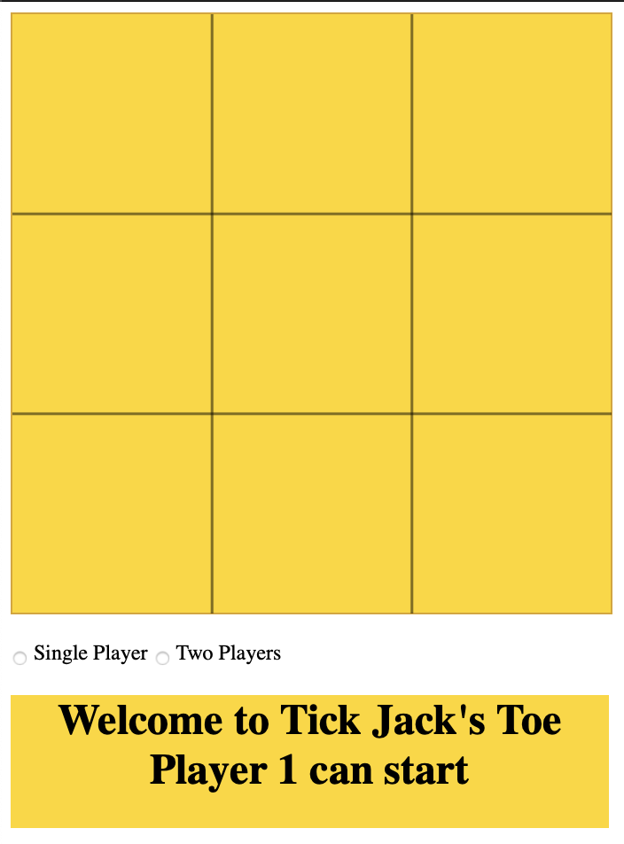

Ruby: Sudoku Master
 I enjoy playing Sudoku every now and then. For those who are unfamiliar with it, Sudoku is a number puzzle popularized by a Japanese company in 1984, but was first appeared in a French newspaper in 1892. For the love of the game, I was trying to write a software using Ruby programming language that will solve the puzzle, and I called it Sudoku Master. At this stage, it is capable of solving easy Sudoku problems. With a few interation, it would be able to solve a more complex sudoku problem.
The purpose of the project is to illustrate my ability to problem-solve and how well do I know how to use Ruby language and its control structures. The project was completed in three days to achieve its MVP.
I enjoy playing Sudoku every now and then. For those who are unfamiliar with it, Sudoku is a number puzzle popularized by a Japanese company in 1984, but was first appeared in a French newspaper in 1892. For the love of the game, I was trying to write a software using Ruby programming language that will solve the puzzle, and I called it Sudoku Master. At this stage, it is capable of solving easy Sudoku problems. With a few interation, it would be able to solve a more complex sudoku problem.
The purpose of the project is to illustrate my ability to problem-solve and how well do I know how to use Ruby language and its control structures. The project was completed in three days to achieve its MVP.
Qonnect: Ruby on Rails
 Qonnect is a two way marketplace, connecting interpreters and clients, with the vision to help interpreters getting paid more for the work they do. As of now, interpreters are not appreciated for their works. An interpreter usually get about $55-67 per booking of 90 minutes. If you factor in the time it takes to attend the appointment, which often added up 2 extra hours. So they are getting paid at a rate of below minimum wages. There are only a maximum of 2-3 jobs an interpreter can take in a day, due to the fact that each job could send him from Ringwood to Werribee or even as far as Geelong. Being interpreter is not viable career in the long run, therefore experienced interpreters are few. If we are to encourage interpreters to keep providing the much needed services, something has to change. The demand of interpreting service isn't going to reduce anytime soon, as each year the number of visitors to Australia is on the increase. In 2018, Australia has received 8.5 million international visitors and it is estimated to be 10 million this year (2019).
Currently, most interpreters get their booking through agencies, which takes a big cut. So if we can eliminate the middle-man and expand the reach of customer pools for the interpreters, by making it more accessible to everyone with an access to internet, we could possibly revolutionise the whole interpreting and translating industry.
Qonnect is the platform to connect current and future interpreters directly to the clients, which could be schools, hospitals, clinic, court houses, immigration offices and more.
(Aside from all that, Qonnect is a two weeks project to illustrate my skills in database and Ruby on Rails.)
Qonnect is a two way marketplace, connecting interpreters and clients, with the vision to help interpreters getting paid more for the work they do. As of now, interpreters are not appreciated for their works. An interpreter usually get about $55-67 per booking of 90 minutes. If you factor in the time it takes to attend the appointment, which often added up 2 extra hours. So they are getting paid at a rate of below minimum wages. There are only a maximum of 2-3 jobs an interpreter can take in a day, due to the fact that each job could send him from Ringwood to Werribee or even as far as Geelong. Being interpreter is not viable career in the long run, therefore experienced interpreters are few. If we are to encourage interpreters to keep providing the much needed services, something has to change. The demand of interpreting service isn't going to reduce anytime soon, as each year the number of visitors to Australia is on the increase. In 2018, Australia has received 8.5 million international visitors and it is estimated to be 10 million this year (2019).
Currently, most interpreters get their booking through agencies, which takes a big cut. So if we can eliminate the middle-man and expand the reach of customer pools for the interpreters, by making it more accessible to everyone with an access to internet, we could possibly revolutionise the whole interpreting and translating industry.
Qonnect is the platform to connect current and future interpreters directly to the clients, which could be schools, hospitals, clinic, court houses, immigration offices and more.
(Aside from all that, Qonnect is a two weeks project to illustrate my skills in database and Ruby on Rails.)
Javascript: Tic-Jack's-Toe

This little Tic-Jack's-Toe game is written in Javascript. I challenge you to try to beat my BOT in the single player mode. If you don't choose anything, it assumes it's a two player mode. Please, checkout my GitHub to see the code.
I have written the algorithm myself. The alogrithm is kind of bruteforce but it works.